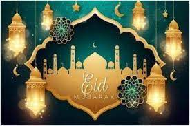
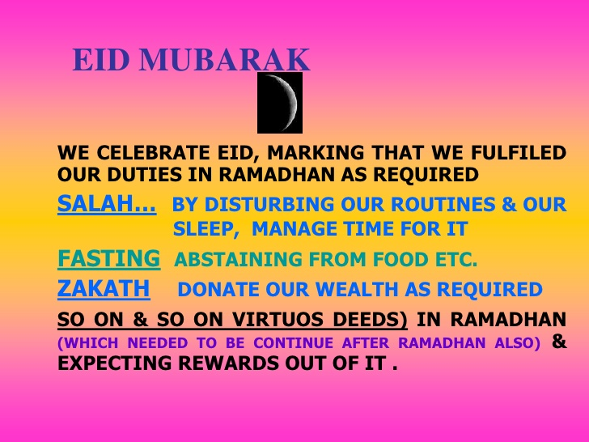

What Is Eid?

Eid also known as eid-ul-fitr,it is a religious festival celeberated by the Muslims.It is a Festival of breaking the fast. It marks the end of the month of ramadan. Eid is an arabic word for 'Festivity' whereas fitr means 'to break the fast'.
Why do we celeberate eid?

The Muslims beleive that Ramadan purifies the soul. It is beleived eid brings brotherhood,love and sympathy with it whereas it takes away jealousy,hatred and hostility along with it.
How do we celeberate eid?
Eid features two or three days of celeberation that includes special morning prayers, people greet each-other 'eid-mubarak' which means 'blessed eid'. Sweet dishes such as sheer-korma, savaiaa are prepared, gifts are given to children as well as to the needy. Muslims encourage the term 'to forgive and forget' on this day.